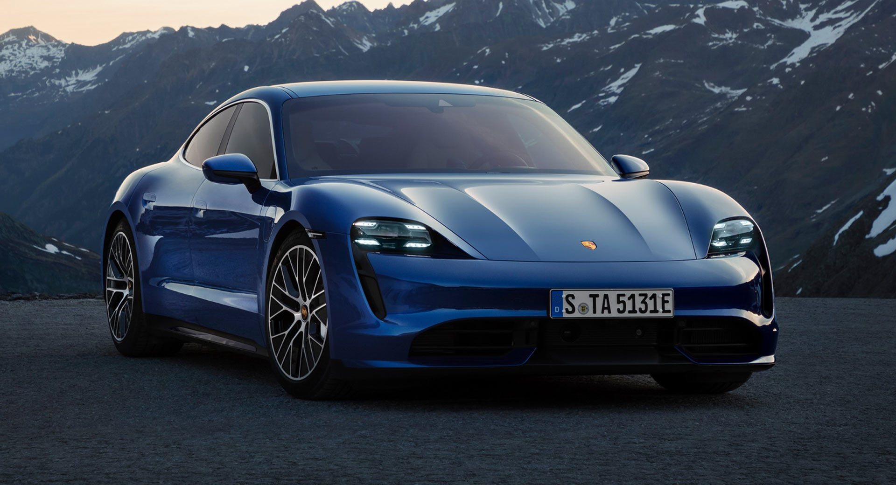

Porsche fue fundada en 1931 por Ferdinand Porsche en Stuttgart, Alemania. Aunque al inicio solo ofrecía servicios de diseño e ingeniería, en 1948 lanzó su primer auto deportivo: el Porsche 356. La marca alcanzó fama mundial con el legendario 911, un ícono que sigue evolucionando hasta hoy. Porsche es reconocida por combinar elegancia, ingeniería de precisión y rendimiento en pista, manteniendo siempre su esencia deportiva tanto en carretera como en competencias.
A continuación verás un TOP 3 de los autos más rápidos de Porsche :)
I. Porsche 911 Turbo S
Motor: 3.8L bóxer biturbo de 6 cilindros
Potencia: 641 hp (650 PS)
0–100 km/h: 2.7 segundos
Velocidad máxima: 330 km/h
Tracción: Integral (AWD)
Transmisión: PDK de doble embrague, 8 velocidades
Características clave: combinación perfecta entre lujo, rendimiento y uso diario. Aerodinámica activa, suspensión adaptativa y Launch Control de serie.
II. Porsche Taycan Turbo S
Motorización: Doble motor eléctrico (AWD)
Potencia: 750 hp (con Overboost y Launch Control)
0–100 km/h: 2.6 segundos
Velocidad máxima: 260 km/h
Autonomía: Hasta 412 km (WLTP)
Carga: 5% a 80% en ~22.5 min con cargador rápido
Características clave: Primer eléctrico de Porsche. Diseño futurista, respuesta instantánea y experiencia de manejo al estilo 911, pero sin emisiones.

III. Porsche 718 Cayman GT4 RS
Motor: 4.0L atmosférico bóxer de 6 cilindros (derivado del 911 GT3)
Potencia: 493 hp (500 PS)
0–100 km/h: 3.4 segundos
Velocidad máxima: 315 km/h
Transmisión: PDK de 7 velocidades
Características clave: el más radical de los Cayman. Enfocado 100% en el rendimiento en pista, con aerodinámica agresiva, motor de altas revoluciones y chasis afinado para competición.
Te dejamos un videito para que escuches y disfrutes lo lindo, poderoso y mágico de uno de los mejores autos de Porsche!
Selecciona tu modelo de Porsche favorito:
¿Te gustan los carros que se mostraron en pantalla?